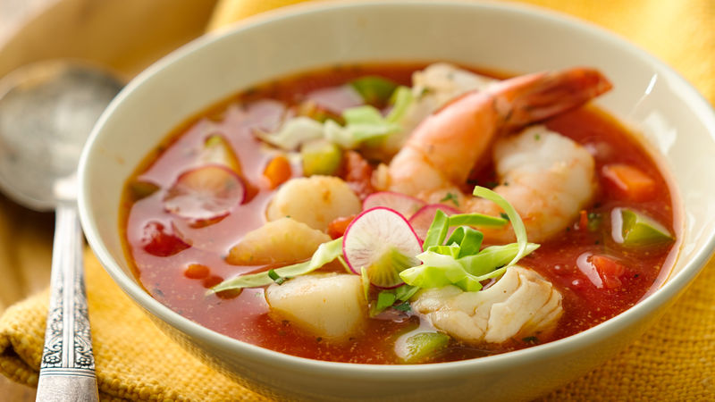

African Fish Stew

Enjoy African Fish Stew, Recipe invented by Gina Gichuru
It is nice and light and fast to cook. Perfect for the summer. You can serve with white rice or the Kenyan staple food ugali. Ugali consists of simply boiling water and then adding white corn meal until texture is solid.
... read more on health benefits
- Prep: 10 mins
- Cook: 25 mins
- Serving: 4
Nutrition fact
Per Serving437 calories; protein 74.5g; carbohydrate 12g; fat 8.9g; cholesterol 125.6mg; sodium 488.9mgFull Nutrition
Ingredients
- 1 tablespoon olive oil
- 1 onion, chopped
- 1 cup seafood stock
- 1 head bok choy, chopped
- 1/4 cup tomato paste
- 3 cloves garlic, chopped
- 1 teaspoon gumbo file powder
- salt and ground black pepper to taste
- 2 saffron threads, or to taste
- 3 pounds tilapia fillets
- Heat oil in a skillet over medium heat. Add onion; cook and stir until translucent, about 5 minutes. Add seafood stock and tomato paste. Add bok choy, garlic, gumbo file, salt, pepper, and saffron; cook and stir until well incorporated, about 5 minutes. Add tilapia. Let simmer until flavors blend and fish flakes easily with a fork, 15 to 20 minutes.